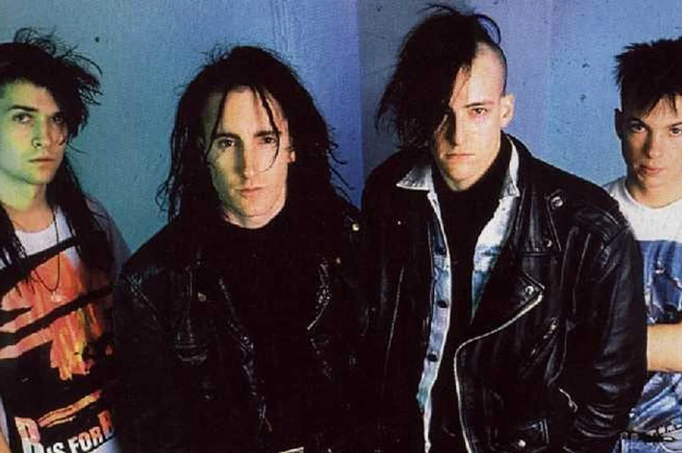

How It Came to Be
This genre took inspiration from Groove Metal and added electronic components to it, hence the industrial part of its name. There are some bands that are not necessarily metal, but only industrial, which is a separate genre in itself. Famous bands include Rammstein, Nine Inch Nails, and Marilyn Manson, although Fear Factory was the one that began the genre.
Clothes Worn & Culture
Although this genre does not have a specific look, it is highly theatrical in nature. The sounds are dramatic, and performances often feature extensive use of pyrotechnics and elaborate props. For example, the band Rammstein frequently draws inspiration from plays they experienced growing up, incorporating those elements into their concert theatrics.
Fun Facts
Mnay bands in this genre have been hired to make soundtracks for different video games. The most infamous is the soundtrack for Doom 2016.
Songs
Click on an image to see the history of one of the metal genres